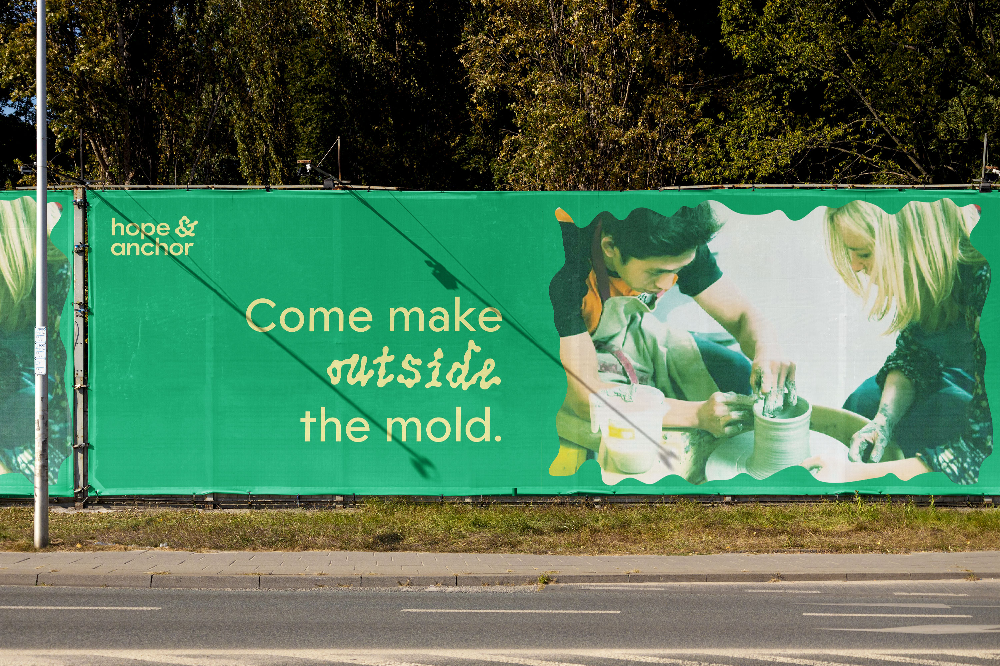
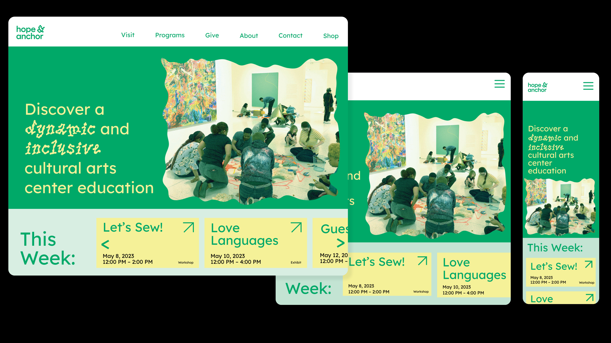
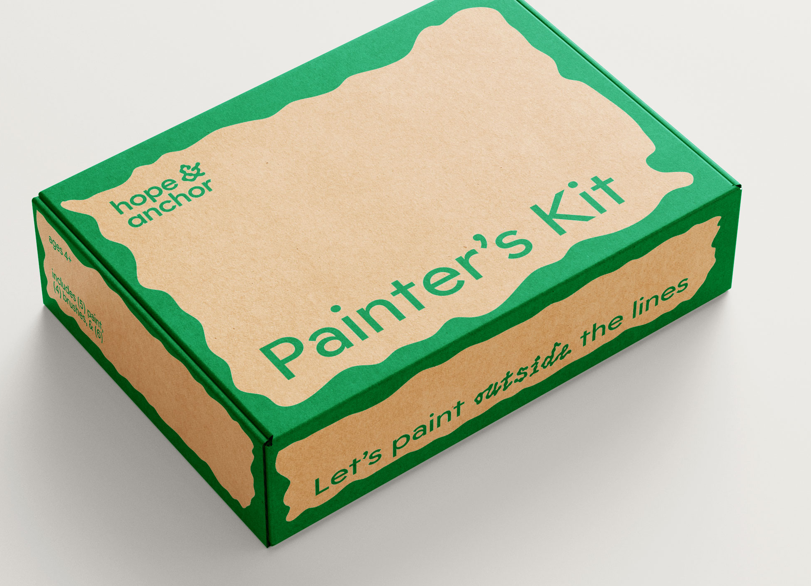
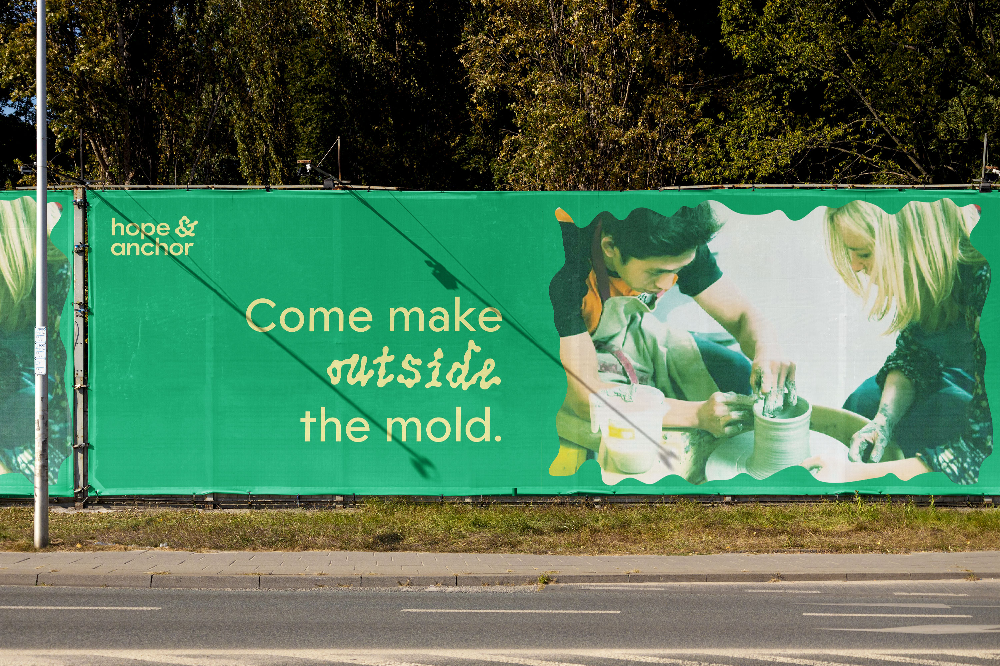
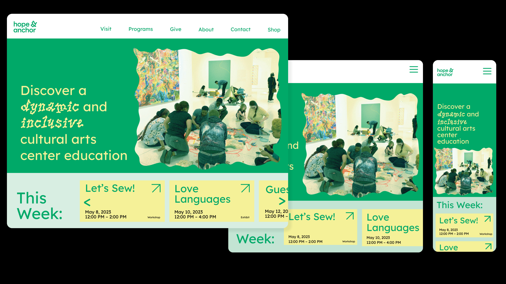
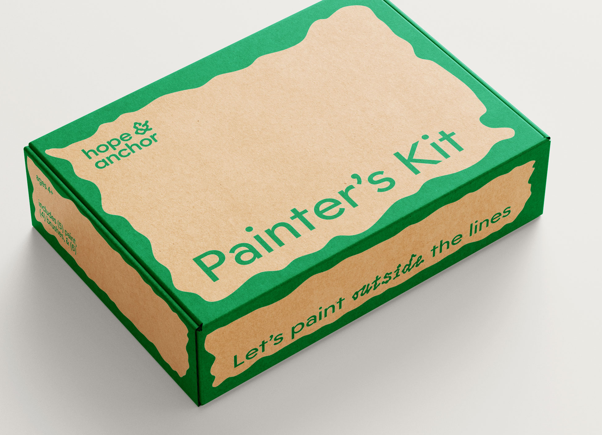
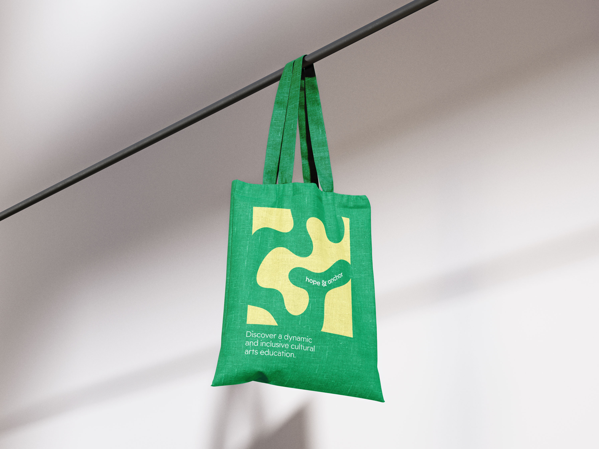
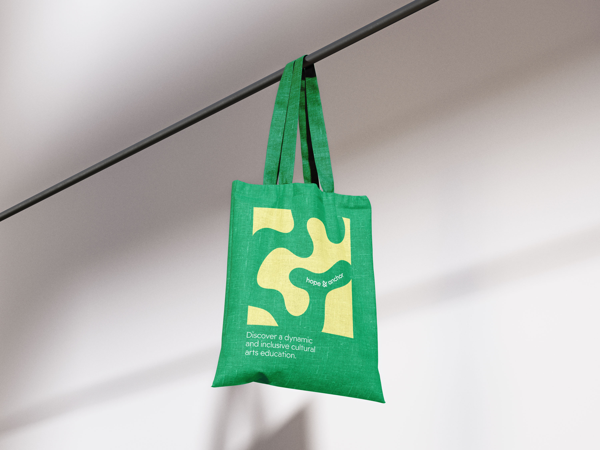

Hope & Anchor
is a vibrant community arts education center that serves as a creative hub for individuals of all ages and backgrounds, aiming to foster artistic expression, nurture talent, and promote social cohesion through various artistic disciplines.
Advised by Emily Rye
For Color and Surface II
 





 
